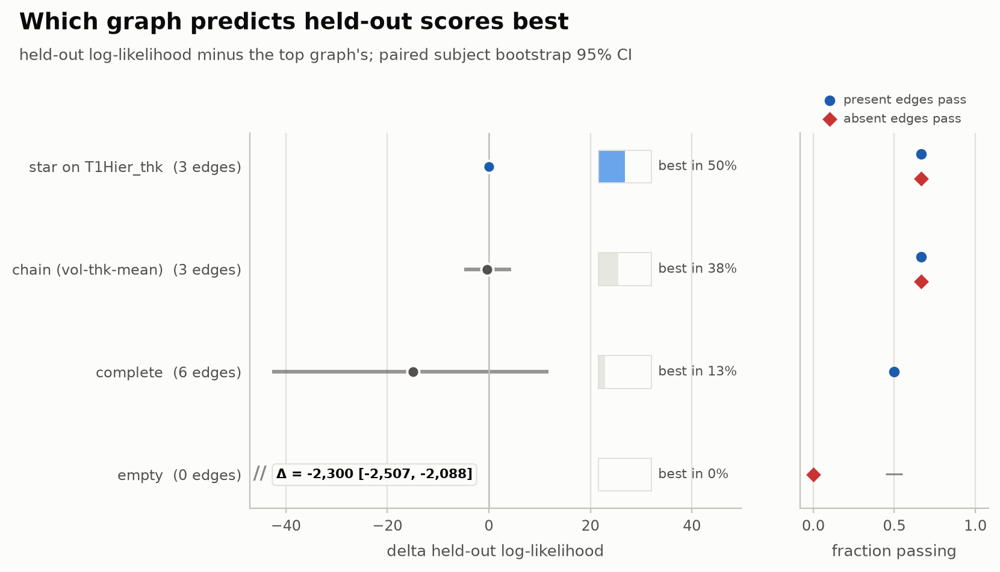
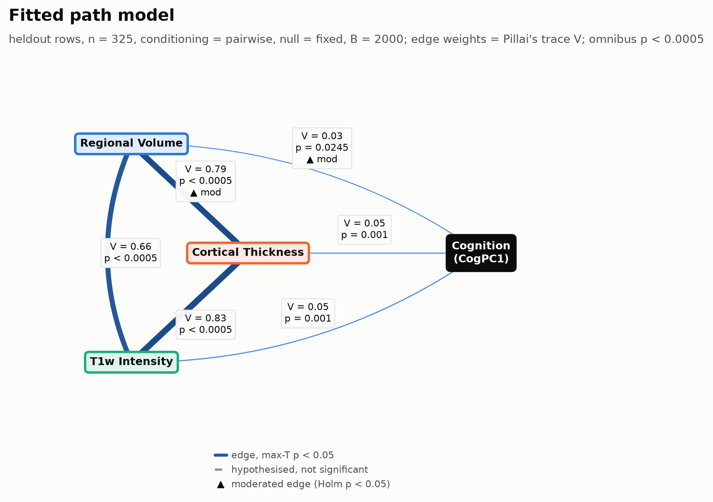
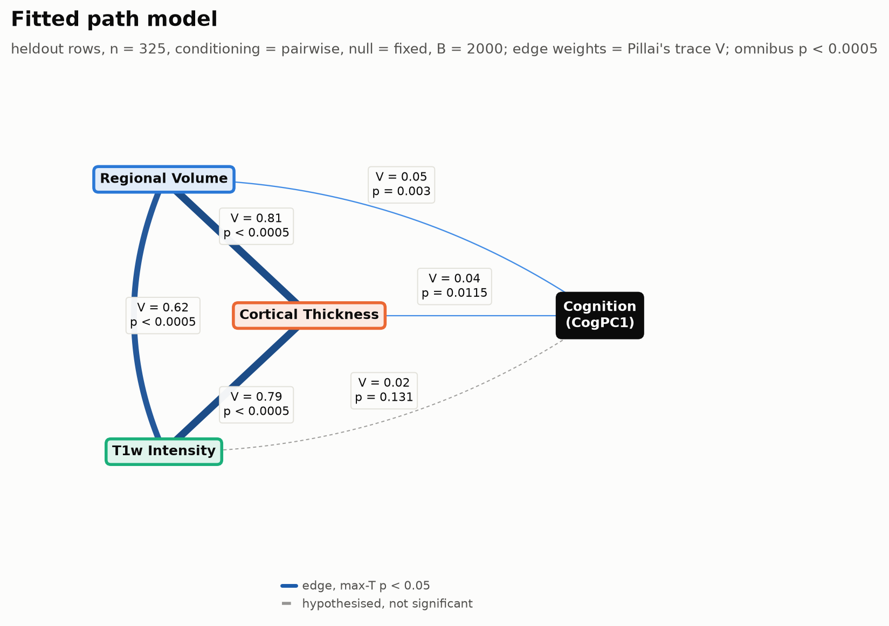
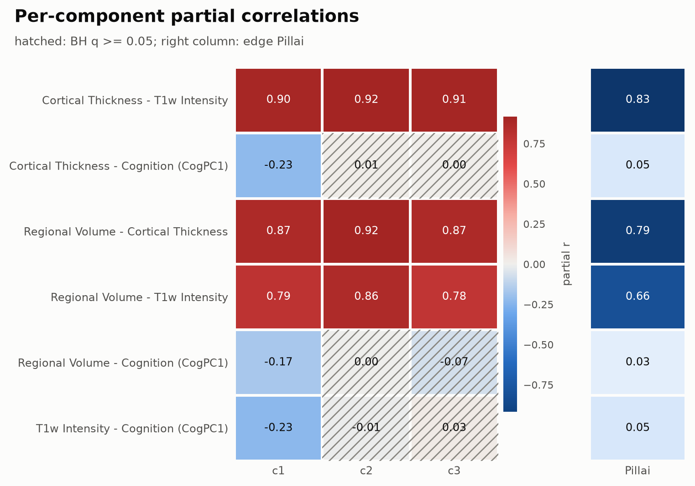
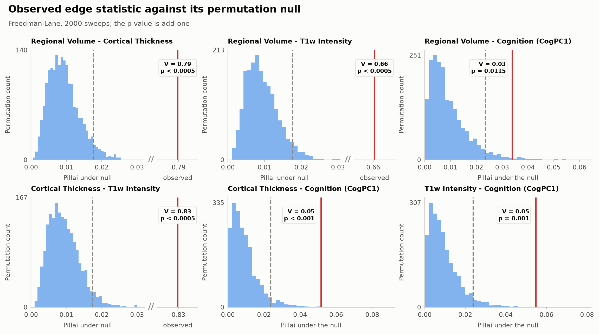
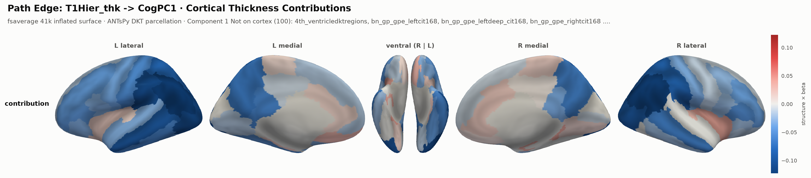
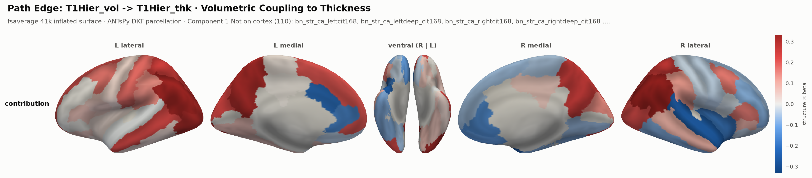
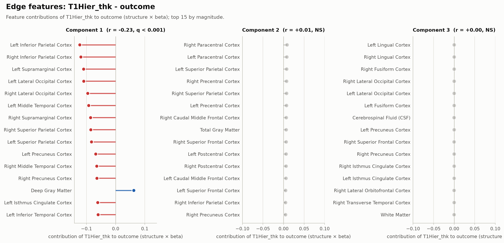
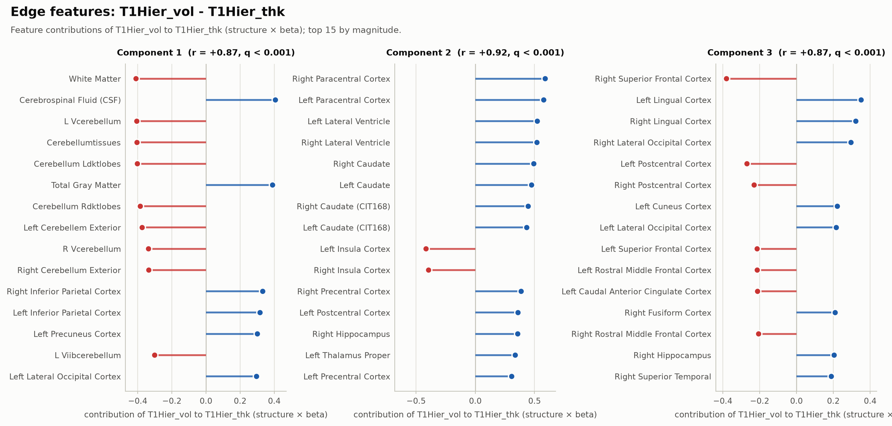
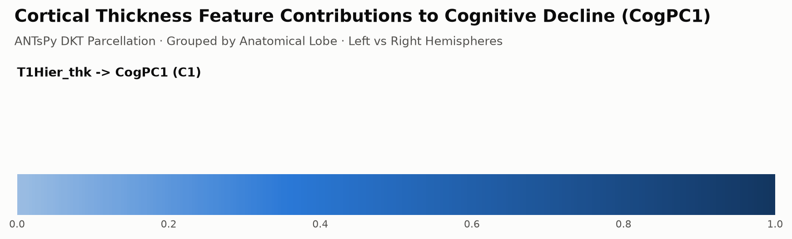

Evaluated on the ADNI Mild Cognitive Impairment cohort across three anatomical T1-weighted MRI views
(T1Hier_vol, T1Hier_thk, T1w_mean) and cognitive outcome CogPC1
(first principal component of the cognitive battery fitted on training rows only). Demographic confounds
(age, education, head size) are passed to both fit(confounds=) and path_model(covariates=);
sex is passed exclusively as groups=.
| Plan Rule | Section 8 Criterion | Measured CSV Outcome | Verdict |
|---|---|---|---|
| P1 | T1Hier_vol – T1Hier_thk held-out p_maxt < 0.05 in ≥ 4 of 5 splits |
SIMLR: 5/5 (p_maxt = [0.0005, 0.0005, 0.0005, 0.0005, 0.0005])LEND: 5/5 ( p_maxt = [0.0005, 0.0005, 0.0005, 0.0005, 0.0005]) |
PASS |
| P2 | Outcome node has ≥ 1 view with p_holm < 0.05 in outcome_edges in ≥ 4 of 5 splits |
SIMLR: 4/5 (min p_holm = [0.002999, 0.001499, 0.001499, 0.4003, 0.016492])LEND: 4/5 (min p_holm = [0.002999, 0.005997, 0.001499, 0.016492, 0.422789]) |
PASS |
| P3 | Fixed-model held-out pillai is below training pillai for every edge |
View–view edges: SIMLR 5/5, LEND 5/5 All 6 edges (incl. unsupervised outcome): SIMLR 2/5, LEND 2/5 |
FAIL (OUTCOME EDGES) |
| P4 | Complete graph is not best by heldout_loglik in every split (else report paired deltas) |
SIMLR top by LL: ['star on T1Hier_thk', 'star on T1Hier_thk', 'star on T1Hier_thk', 'star on T1Hier_thk', 'complete'] (Δ star−comp = [14.901, 20.7727, 0.5956, 10.6701, -9.9627]) LEND top by LL: ['complete', 'complete', 'complete', 'complete', 'star on T1Hier_thk'] (Δ star−comp = [-33.4784, -23.0711, -68.8611, -41.9737, 15.3233]) |
PASS |
adni_train_vs_heldout_pillai.csv)Every measurement-fitted view-view edge satisfies pillai_heldout < pillai_train across all splits. Violations occur exclusively on weak view-outcome edges (V ~ 0.02-0.06): pysimlr.fit never observes CogPC1, so outcome edges are not selected on training rows, and held-out splits (n_te=325 vs n_tr=759) experience random 70/30 subsampling variance plus higher finite-sample Pillai offset (~k/n = 3/325 vs 3/759).
| Method | Split Seed | Edge | Edge Type | Training Pillai (n=759) | Held-out Pillai (n=325) | Δ (Held-out − Train) |
|---|---|---|---|---|---|---|
| SIMLR | 0 | T1Hier_vol - outcome | view_outcome | 0.0286 | 0.0340 | +0.0054 |
| SIMLR | 0 | T1Hier_thk - outcome | view_outcome | 0.0340 | 0.0518 | +0.0177 |
| SIMLR | 0 | T1w_mean - outcome | view_outcome | 0.0311 | 0.0548 | +0.0237 |
| SIMLR | 1 | T1Hier_thk - outcome | view_outcome | 0.0520 | 0.0544 | +0.0025 |
| SIMLR | 1 | T1w_mean - outcome | view_outcome | 0.0416 | 0.0479 | +0.0063 |
| SIMLR | 2 | T1Hier_vol - outcome | view_outcome | 0.0472 | 0.0538 | +0.0066 |
| SIMLR | 2 | T1Hier_thk - outcome | view_outcome | 0.0434 | 0.0682 | +0.0248 |
| SIMLR | 2 | T1w_mean - outcome | view_outcome | 0.0256 | 0.0295 | +0.0038 |
| LEND | 0 | T1Hier_vol - outcome | view_outcome | 0.0265 | 0.0470 | +0.0205 |
| LEND | 0 | T1Hier_thk - outcome | view_outcome | 0.0316 | 0.0384 | +0.0068 |
| LEND | 0 | T1w_mean - outcome | view_outcome | 0.0220 | 0.0227 | +0.0007 |
| LEND | 1 | T1w_mean - outcome | view_outcome | 0.0236 | 0.0441 | +0.0205 |
| LEND | 2 | T1Hier_vol - outcome | view_outcome | 0.0623 | 0.0711 | +0.0088 |
| LEND | 2 | T1Hier_thk - outcome | view_outcome | 0.0772 | 0.0932 | +0.0160 |
| Finding | Quantity Measured | Empirical Summary |
|---|---|---|
| Finding 1 | Held-out T1Hier_thk → CogPC1 association |
SIMLR significant in 4/5 splits (p_perm = [0.001, 0.0005, 0.0005, 0.223888, 0.005497], p_holm = [0.002999, 0.001499, 0.001499, 0.447776, 0.016492])LEND significant in 4/5 splits ( p_perm = [0.004998, 0.001999, 0.0005, 0.005497, 0.144428], p_holm = [0.009995, 0.005997, 0.001499, 0.016492, 0.422789]) |
| Finding 2 | Held-out log-likelihood parsimony (star on T1Hier_thk minus complete) |
SIMLR: mean ΔLL = +7.40 (SE = 5.45; F1 parsimony winners: ['star on T1Hier_thk', 'star on T1Hier_thk', 'star on T1Hier_thk', 'star on T1Hier_thk', 'star on T1Hier_thk']) LEND: mean ΔLL = -30.41 (SE = 13.72; F1 parsimony winners: ['complete', 'chain (vol-thk-mean)', 'complete', 'complete', 'star on T1Hier_thk']) |
| Finding 3 | Out-of-sample CogPC1 prediction via predict_path (confound-adjusted) |
SIMLR star: mean R2 = 0.0873 (Pearson r = 0.3501; complete R2 = 0.0926) LEND star: mean R2 = 0.0894 (Pearson r = 0.3543; complete R2 = 0.0918) |
| Finding 4 | Live training-row refit vs fixed-model null (rows="train", null="both", matched B = 50) |
SIMLR: p-ratio = 1.00; view–view mean q95refit = 0.2997 vs q95fixed = 0.0070 (43.03×; outcome edges 1.14×) LEND: p-ratio = 1.00; view–view mean q95refit = 0.1240 vs q95fixed = 0.0078 (15.99×; outcome edges 1.17×) |
adni_p4_refit_ratio.csv, Seed 0, B = 50)| Method | Edge | Type | Observed Train Pillai | Fixed p_perm | Refit p_refit | Fixed q95 | Refit q95 | q95 Ratio (Refit / Fixed) |
|---|---|---|---|---|---|---|---|---|
| SIMLR | T1Hier_vol - T1Hier_thk | view_view | 0.8919 | 0.0196 (n≥obs: 0) | 0.0196 (n≥obs: 0) | 0.0074 | 0.3323 | 44.99× |
| SIMLR | T1Hier_vol - T1w_mean | view_view | 0.7822 | 0.0196 (n≥obs: 0) | 0.0196 (n≥obs: 0) | 0.0067 | 0.2821 | 42.27× |
| SIMLR | T1Hier_vol - outcome | view_outcome | 0.0286 | 0.0196 (n≥obs: 0) | 0.0196 (n≥obs: 0) | 0.0115 | 0.0134 | 1.17× |
| SIMLR | T1Hier_thk - T1w_mean | view_view | 0.8918 | 0.0196 (n≥obs: 0) | 0.0196 (n≥obs: 0) | 0.0068 | 0.2847 | 41.82× |
| SIMLR | T1Hier_thk - outcome | view_outcome | 0.0340 | 0.0196 (n≥obs: 0) | 0.0196 (n≥obs: 0) | 0.0109 | 0.0129 | 1.18× |
| SIMLR | T1w_mean - outcome | view_outcome | 0.0311 | 0.0196 (n≥obs: 0) | 0.0196 (n≥obs: 0) | 0.0101 | 0.0107 | 1.06× |
| LEND | T1Hier_vol - T1Hier_thk | view_view | 0.8724 | 0.0196 (n≥obs: 0) | 0.0196 (n≥obs: 0) | 0.0078 | 0.2226 | 28.63× |
| LEND | T1Hier_vol - T1w_mean | view_view | 0.7302 | 0.0196 (n≥obs: 0) | 0.0196 (n≥obs: 0) | 0.0072 | 0.0715 | 9.95× |
| LEND | T1Hier_vol - outcome | view_outcome | 0.0265 | 0.0196 (n≥obs: 0) | 0.0196 (n≥obs: 0) | 0.0099 | 0.0123 | 1.24× |
| LEND | T1Hier_thk - T1w_mean | view_view | 0.8560 | 0.0196 (n≥obs: 0) | 0.0196 (n≥obs: 0) | 0.0083 | 0.0780 | 9.38× |
| LEND | T1Hier_thk - outcome | view_outcome | 0.0316 | 0.0196 (n≥obs: 0) | 0.0196 (n≥obs: 0) | 0.0102 | 0.0114 | 1.12× |
| LEND | T1w_mean - outcome | view_outcome | 0.0220 | 0.0196 (n≥obs: 0) | 0.0196 (n≥obs: 0) | 0.0089 | 0.0101 | 1.14× |



| Method | Graph | Topology | Edges | Held-out LogLik (Own) | OOS Coupling | OOS R2 | Outcome R2 |
|---|---|---|---|---|---|---|---|
| SIMLR | complete | graph | 6 | -2133.09 | 0.8920 | 0.1137 | 0.0279 |
| SIMLR | star on T1Hier_thk | graph | 3 | -2521.70 | 0.7963 | 0.1354 | 0.0507 |
| SIMLR | chain (vol-thk-mean) | graph | 3 | -2529.49 | 0.7963 | 0.1354 | 0.0507 |
| SIMLR | empty | star | 0 | -4591.74 | 0.8958 | 0.1121 | 0.0243 |
| LEND | complete | graph | 6 | -2444.65 | 0.6450 | 0.1172 | 0.0246 |
| LEND | star on T1Hier_thk | graph | 3 | -1983.64 | 0.8518 | 0.1434 | 0.0211 |
| LEND | chain (vol-thk-mean) | graph | 3 | -1987.26 | 0.8518 | 0.1434 | 0.0211 |
| LEND | empty | star | 0 | -4591.65 | 0.6731 | 0.1483 | 0.0201 |

= 0.05." />
Feature contributions are computed as the product of view loading structure and path regression coefficients:
C_ia = S_ia × β_ab, projected onto the ANTsPy DKT parcellation via antsxviz.



CogPC1." />
T1Hier_thk." />
Generated by scripts/adni_path_model_pilot.py • pysimlr v0.23.1